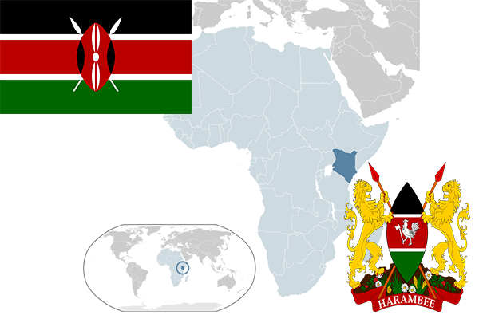

To`liq nomi: Keniya Respublikasi
Region: Sharqiy Afrika
Qonunchilik shakli: Respublika
Mustaqillik kuni: 12-dekabr 1963-yil (Birlashgan Qirollikdan)
Poytaxt: Nayrobi
Maydoni: 582 650 km² (dunyoda 46 -o`rinda )
Chegaradosh davlatlari: Tanzaniya, Uganda, Sudan, Efiopiya, Samoli
Aholisi: 44 037 656 (dunyoda 30 - o`rinda, 2013 -yil roʻyxat)
Aholi zichligi: 65,1/km²
Aholining o`rtacha yoshi: 55,3 yil ( 55,4 ayollar, 55,2 erkaklar)
Rasmiy tili: Ingliz va suaxili tili
Dini: 38% protestant, 28% katolik, 6% musulmon, 18% paganizm
Pul birligi: Keniya shillingi
Telefon prefiksi: +254
Internet domen: .ke
Xalqaro tashkilotlarga a`zoligi: BMT (1963 – yildan)
Dengiz va okeanlarga chiqishi: Hind okeani
YIM: Butun: $ 63,121 mlrd, Jon boshiga $ 1,432 (2015 - yil roʻyxati)
Yirik shaharlari: Nayrobi, Mombasa